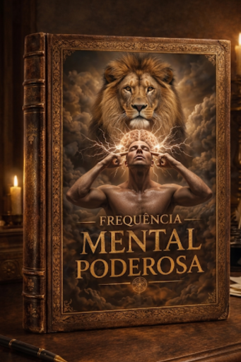

Recurso Exclusivo
O Peso Invisível do Efeito Golem.
As vozes alheias criaram uma armadura de chumbo sobre a sua vontade. Este guia ensina a transmutar esse peso em impulso.
A desmotivação é apenas uma frequência desalinhada. Recupere a sua potência mental hoje.
As vozes alheias criaram uma armadura de chumbo sobre a sua vontade. Este guia ensina a transmutar esse peso em impulso.
A estagnação não é falta de inteligência ou esforço. É o resultado de operar numa frequência de sobrevivência enquanto a sua alma pede criação.
O método "Frequência Mental Poderosa" foi desenhado para quem sente que está a travar o motor enquanto acelera.

Não aceite a mediocridade como um destino. A sua biologia foi feita para a expansão, não para o encolhimento.
Limpeza total de ruídos mentais, traumas e influências externas que drenam a sua energia vital.
Ajuste fino da percepção e foco. Alinhar o seu estado interno com os seus maiores objetivos.
Transformação da clareza em ação. O rugido que deixa de ser interno para moldar a sua realidade física.

A dor de continuar igual deve tornar-se maior do que o medo de mudar. Quando esse ponto é atingido, a transmutação é inevitável.
Isso não é um devaneio. É o estado natural de uma mente que não está em guerra consigo mesma. Recupere a sua paz e a sua força num só movimento.


O mapa completo para despertar o rugido interno e assumir a autoridade sobre a sua própria vida.